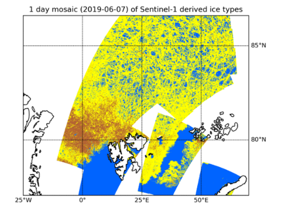
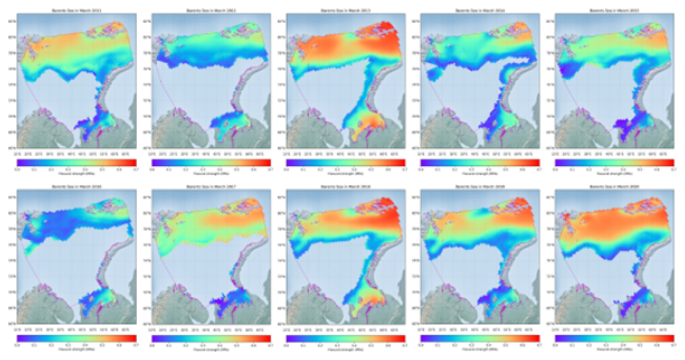
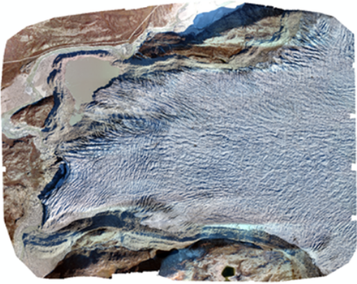
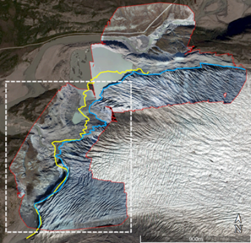

-
STAR소개

-
STAR소식
-
원격탐사
-
극지관측
-
관련사이트
연구사업 무인관측과 수치모델링을 통해 북극 해빙과 기후 변화를 예측합니다.
-
북극 빙권 변화 파악을 위한 원격탐사 산출물 개발
- 연구사업 개요
- 북극해빙의 감소 및 영구동토 용해로 세계적인 이상 기후 현상 발생
- 인공위성 원격탐사 기반의 관측은 북극 빙권의 광범위한 변화를 모니터링하기에 적합하나, 산출물의 종류나 정량화가 제한적이므로, 극지연구소 자체로 생산하는 정기적인 산출물 개발 필요
- 기후/환경 변화에 적극적으로 대응하기 위해서는 관측과 예측이 연계되어야 하며, 기후 모델에 직접 접목시킬 수 있는 원격탐사 산출물의 개발, 생산, 활용이 필수
- 위성/무인기를 활용한 빙권 특성을 정량화하는 산출물을 개발하고 시공간적 변화와 기후요소와의 상호 영향을 분석함으로써, 다가올 북극 개척 시대에 선제적 대응
- 주요 연구내용
- 해빙 특성 관측 정량화 및 시공간적 변화 양상 분석
- 무인기와 위성 자료 활용 동토 변화 관측
- 온난화에 따른 북극 빙권 변화 특성 이해 및 변화량 산정
해빙 이동 벡터장과 누적 변형 산출 머신러닝을 통한 해빙 두께 산출 기법 개발
머신러닝을 통한 해빙 두께 산출 기법 개발
-
극지 운항 관리를 위한 위성 데이터 기반 해빙 분포 관측 및 분석
- 연구사업 개요
- 기후변화로 인한 북극 온난화로 인한 북극항로 수요 폭증에 대비하기 위하여 운항 지원을 위한 해빙 자료 생산 시스템 구축과 고도화
- 주요 연구내용
-
영상레이더 자료 처리 기반 해빙유형 자동 분류 기술 개발
영상레이더 기반 해빙 유형 분류 기술 개발 고해상도 영상레이더 기반 해빙 유형 자동 분류
-
다중편파 영상레이더 산란모델 및 편파분석 기술을 활용한 해빙 강도 추정 알고리즘 개발
영상레이더 다중 편파 신호 분석 해빙강도 추정 알고리즘 개발
해빙 유형 분류 산출물 생산 해빙 강도 추정 산출물 생산  -
무인기 획득 영상 기반 빙하 모니터링 기술 연구
- 연구사업 개요
- 극지 관측에 효율적인 무인이동체 기반으로 획득된 고해상도 영상과 인공위성 데이터를 복합 활용한 그린란드 비항 융합 관측을 통한 정밀 관측 수행
- 기후변화로 인한 급격한 융빙의 대표적 사례인 그린란드 빙하를 관측하여 모니터링 기술 습득, 고도화
- 주요 연구내용
-
그린란드 현지 하계 조건 현장 조사 공동 수행
그린란드 Kangerlussuaq 인근 빙하 지역에 대한 하계 무인기 영상 획득 계획 수립 무인기 획득 자료의 검보정 자료로 활용을 위해 무인기 영상 획득과 동시기에 현장 관측 수행 그린란드 연구 대상 지역에 대한 하계 무인기 영상 획득 수행
-
극지 실증시연 취득 데이터 분석·활용 및 기존 위성 데이터와 비교 연구
다중시점 무인기 획득 영상 분석을 통한 빙하 지역 수치고도모델 추출 현장 조사와 동시기에 인공위성 데이터 획득 인공위성 기반 빙하 지역 수치고도모델과 무인기 기반 빙하 지역 수치고도모델의 비교 분석
-
극지환경 모사시험
국내 겨울철 강설환경에서의 극지환경 모사시험을 통해 획득된 무인기 영상 자료를 활용하여 지표면 특성 및 지형 분석 연구 수행
무인기 관측 영상 모자이크를 통한 빙하 모니터링 이미지 생성 무인기 관측(파란선)과 과거 위성 관측(노란선)을 비교하여 빙하 후퇴 현황 파악  -
극지 기후변화 대응을 위한 위성정보활용 고도화 및 큐브위성개발 기획
-
- 비전
- 큐브위성의 전주기적 극지해빙관측을 통한 독자적 기후변화 예측능력 확보
- 위성을 활용한 극지해빙관측 기술 자립화
- 군집위성 운용기술 경쟁력 확보
-
- 목표
- 산업: 큐브위성 개발 및 위성영상 활용, 산업 활성화 기반 구축
- 정책: 극지관측 정보를 국가 기후변화 예측의 전략적 자산으로 활용
- 산업: 큐브위성 군집운용 기술 및 극지관측 자료처리 · 분석 기술 확보
-
- 세부사업
- 수동마이크로파 및 정밀광학 극지 관측 큐브위성 개발 및 운용
- 극지관측 전용 위성센터 기능확장 및 실용화
-
- 추진전략
- 전주기적 극지관측 데이터 확보 및 극지 외 지역 산출물 생성
- 신속 · 정확한 극지관측 데이터 분석
- 기후변화 감시를 위한 준실시간 예측모델 입력자료 제공
극지관측 큐브위성 개발 및 기후변화 예측기술 개선 사업 목표 체계
- 산업관점
- 전략목표: 큐브위성 및 재해 · 재난 대응분야 산업 활성화 기반 구축
- 성과목표: 큐브위성 개발 및 용 분야 산업규모 확대
- 성과지표: 위성개발, 발사 및 운용 기술 100% 국내 조달
- 정책관점
- 전략목표: 극지관측 정보를 국가 기후변화 예측의 전략적 자산으로 활용
- 성과목표: 위성정보를 활용하여 기후변화 대응을 위한 국제 공동 연구 수행
- 성과지표: 위성정보를 활용한 기후변화 예측 연구사업의 국제협력 비중 50% 이상
- 과학 · 기술 관점
- 전략목표 위성 원격탐사 기술 고도화 및 한반도 겨울철 이상기후 ( 한파, 이상고온 ) 예측기술 개선
- 성과목표: 큐브위성 본체 및 탑재체 자체개발 기술 고도화
- 성과지표: 큐브위성 본체 및 탑재체 기술 세계 80% 수준
-